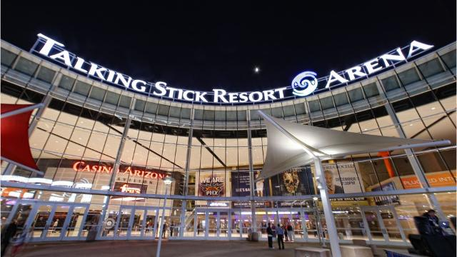

Talking Stick Resort Arena
Sporting a capacity of over 18,000 people, Talking Stick Resort Arena is home to the NBA's own Phoenix Suns, as well as the WNBA's Phoenix Mercury.
Sporting a capacity of over 18,000 people, Talking Stick Resort Arena is home to
the NBA's own Phoenix Suns, as well as the WNBA's Phoenix Mercury. There are many
shops and sights to see around the venue, as The Talking Stick Resort Arena is
located in Downtown Phoenix. Located near Chase Field, home of the Major League
Baseball Team "Arizona Diamondbacks, the Phoenix Convention Center, the Herberger
Theater Center, and more, entertainment options are plentiful!
Check out the events
that are going on at Talking Stick Resort Arena!
For transportation options to and from the Talking Stick Resort Arena, the city
of Phoenix has a light rail system provided by Valley Metro, that allows for
cheap, worry-free transportation. For schedules and more information, visit their
website.
Location:
Talking Stick Resort Arena
201 E Jefferson St
Phoenix, AZ 85004
Phone Number
(602)379-7900
Box Office
(602)379-7867